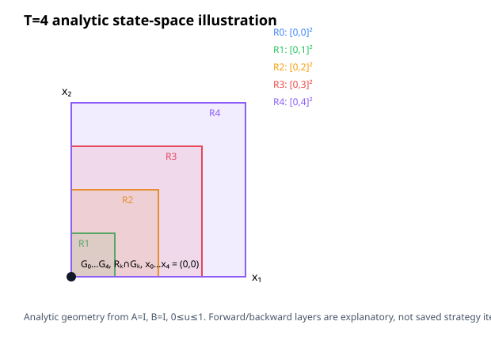

This new-comparison experiment runs reach-back and Strategy B on a vector integrator at state/control dimensions n=1,2 and horizons T=2,4. Controls satisfy 0≤uᵢ≤1; the state box is [-T,T]ⁿ at every stage; x₀=0; the terminal objective is minimize sumᵢ xᵢ[T].
Scope: every row below is included only when both strategies' emitted H relations pass the exact fixture-specific oracle. This proves the unique all-zero optimal history only for these four fixtures. It is not a general completeness, winner, speedup, or complexity claim.
| Case | Reach-back median (range) | Strategy B median (range) | Verified attempts | Verified pairs |
|---|---|---|---|---|
| n=1, T=2 | 5.284 ms (5.256 ms–5.584 ms) | 0.690 ms (0.685 ms–0.755 ms) | 12/12 | 6/6 |
| n=1, T=4 | 11.070 ms (10.857 ms–16.173 ms) | 0.738 ms (0.716 ms–0.963 ms) | 12/12 | 6/6 |
| n=2, T=2 | 12.038 ms (11.747 ms–18.077 ms) | 0.756 ms (0.738 ms–0.812 ms) | 12/12 | 6/6 |
| n=2, T=4 | — (—–—) | — (—–—) | 6/12 | 0/6 |
Timing covers SynthesisWorkspace::run(); process launch/setup are excluded. One excluded warmup pair and six alternating measured pairs were attempted per case. Bounds are 300 s CPU, 8 GiB address space, and 300 s wall time per strategy process; one backend thread and one driver worker were requested. For n=2,T=4, reach-back returned operation_rejected on its warmup and all six measured calls; Strategy B completed all seven. Those six one-sided results are inconclusive and produce no paired timing. Raw output, failures, attempts, and checks are retained in the bundle.
| Case | Strategy | Joint coordinates | Inequality rows | Equality rows | Nonzero H coefficients |
|---|---|---|---|---|---|
| n=1, T=2 | Reach-back | 5 | 14 | 4 | 22 |
| n=1, T=2 | Strategy B | 5 | 10 | 4 | 18 |
| n=1, T=4 | Reach-back | 9 | 22 | 6 | 36 |
| n=1, T=4 | Strategy B | 9 | 18 | 6 | 32 |
| n=2, T=2 | Reach-back | 10 | 28 | 7 | 44 |
| n=2, T=2 | Strategy B | 10 | 20 | 7 | 36 |
| n=2, T=4 | Reach-back | — | — | — | — |
| n=2, T=4 | Strategy B | — | — | — | — |
Coefficient counts are not allocated-byte measurements. The experiment varies state/control dimension, horizon and explicit stage-state bounds together; the factorial cases expose their observed relation-size effects but do not isolate sparse assembly, factorization, conversion, family-query, RSS or phase costs.
The saved 2D geometry below is computed analytically from the fixture; it illustrates the state coordinates and exact forward/backward reachability of the zero-optimum case. It is not a trace of internal strategy iterates.

Source revision 521068b76d1c5021bd738093e3c54baa1da2414b, binary SHA-256 af9a69fb746f8e978deec4615e6d04ceea1f74eaefd0770383aa55f916bdd513. Build provenance: JSON. Attempts: JSONL; checks: JSONL; summary: JSON; fixtures: n=1,T=2, n=1,T=4, n=2,T=2, n=2,T=4; hashes: SHA256SUMS.
Measurement source hashes: {"CMakeLists.txt": "ca8983cc20e8b7e493c233940b51b14ec0162b4e9c7bd0df57ddb7b3291fe3d9", "check_dimension_ladder.py": "d1953686cc92a5a5eed815f9d8cbdaf82b2b3f42892746ed6009bcd6c078c489", "dimension_ladder.cpp": "4bfa9615ab08a9213b4a8f529b4369f54858c66b465dc7416b7a535fece410a2", "render_dimension_ladder.py": "5d50644f729856cbd4cd5f74aeed1948b163d66d144353b81e590538731f07d2", "run_dimension_ladder.py": "44191f19bc59500d593d4173853885d2c2c0aacd7ba5946248c5c0734345e203", "summarize_dimension_ladder.py": "b43113be0010c87902a475e65bd085b8a409bc954e85fc9af102ac9124b3e4e4"}